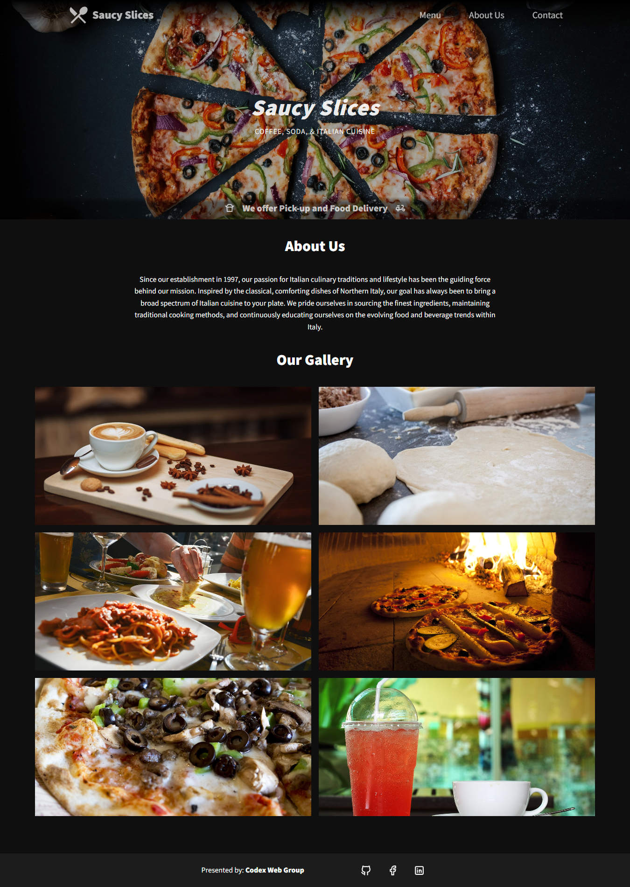

Revitalizing Saucy Slices during an exciting growth phase
Saucy Slices, committed to bringing authentic Italian pizza to every table, engaged my services during a significant period of expansion. The goal was to completely rejuvenate their digital footprint, delivering a website that mirrors their delicious offerings and brand philosophy.
- Deep Dive into Business Needs
- Intuitive User Interface Design
- Responsive Web and Mobile Design
- Frontend Development
